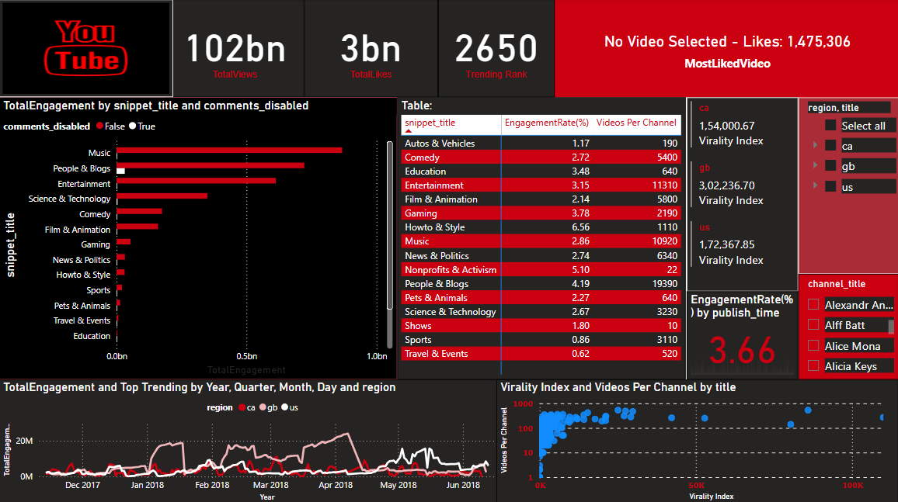

Designed a scalable, cloud-native pipeline using AWS services to transform and analyze YouTube trending data, enabling dynamic dashboards with insights on engagement patterns, regional virality, and category performance

This project was conceived to address the growing demand for scalable, cloud-native data engineering solutions capable of ingesting, processing, and analyzing massive volumes of YouTube trending video data. Recognizing the fragmented nature of structured and semi-structured datasets—particularly JSON-based public YouTube metrics—the project focuses on developing an end-to-end, cloud-based pipeline that transforms raw video data into actionable business insights.
The primary motivation was to empower content creators, marketing strategists, and analysts with the ability to identify engagement patterns, regional virality, and category-based performance, leveraging modern cloud architecture for reliability, scalability, and cost-effectiveness.
The solution architecture leverages a suite of AWS services to construct a modular, serverless pipeline encompassing data ingestion, transformation, enrichment, storage, and visualization. Amazon S3 serves as the foundational data lake, with logically partitioned zones (raw, cleansed, analytics) to manage lifecycle and access control.
Data processing is orchestrated using AWS Glue for schema evolution, deduplication, and transformation, alongside AWS Lambda for real-time JSON-to-Parquet conversion and event-driven processing. Query execution and data exploration are facilitated through AWS Athena, while QuickSight and Power BI provide dynamic dashboards for downstream visualization. The architecture includes IAM for role-based access control, CloudWatch for pipeline monitoring, and optional integration with Redshift for high-performance analytical queries on large datasets.
Key analytical outputs include dynamic dashboards that visualize metrics such as total views, likes, and virality index across categories and regions. Advanced filters allow stakeholders to drill down by country, video type, and comment status, while time series plots reveal seasonal or time-bound shifts in viewer engagement. A notable insight revealed that enabling comments positively correlates with higher engagement rates, while certain regions demonstrate disproportionate virality in specific genres such as music or entertainment.
By transforming noisy web data into a highly curated, queryable format and delivering it through interactive BI tools, this project illustrates the transformative potential of cloud-native analytics in digital media intelligence. Future iterations may incorporate machine learning models for predictive virality and anomaly detection, enhancing strategic decision-making even further